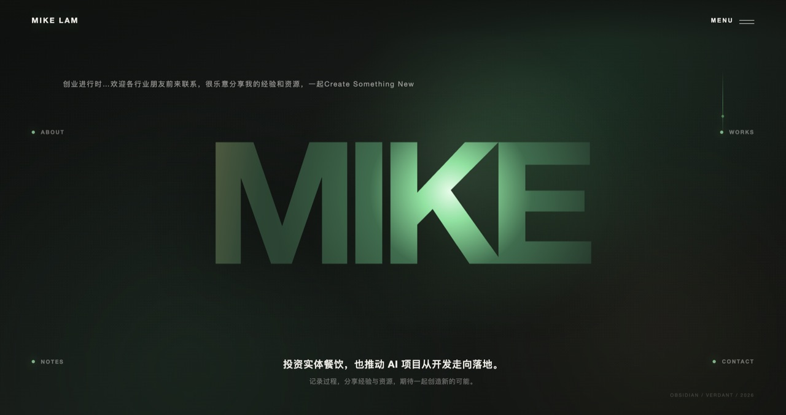
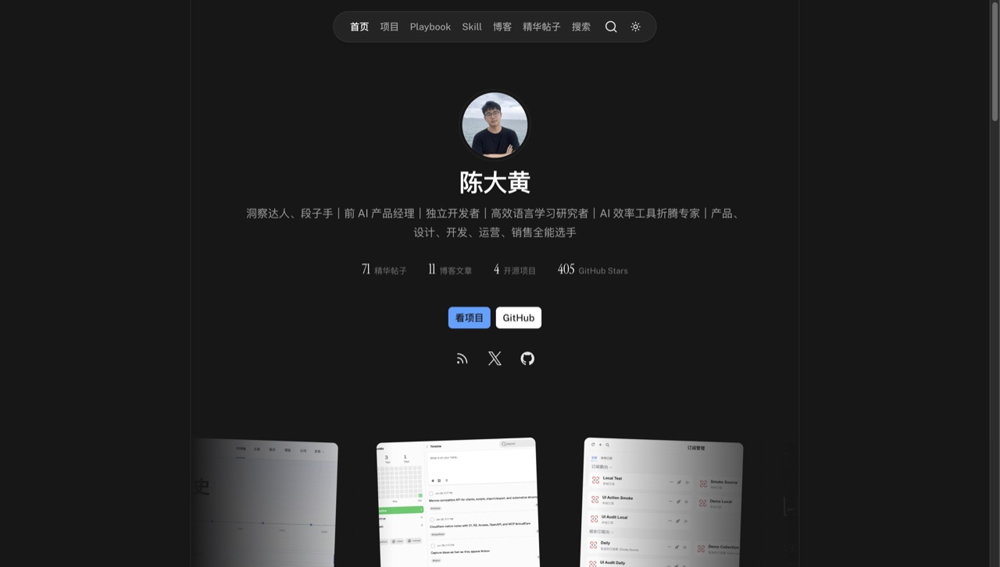
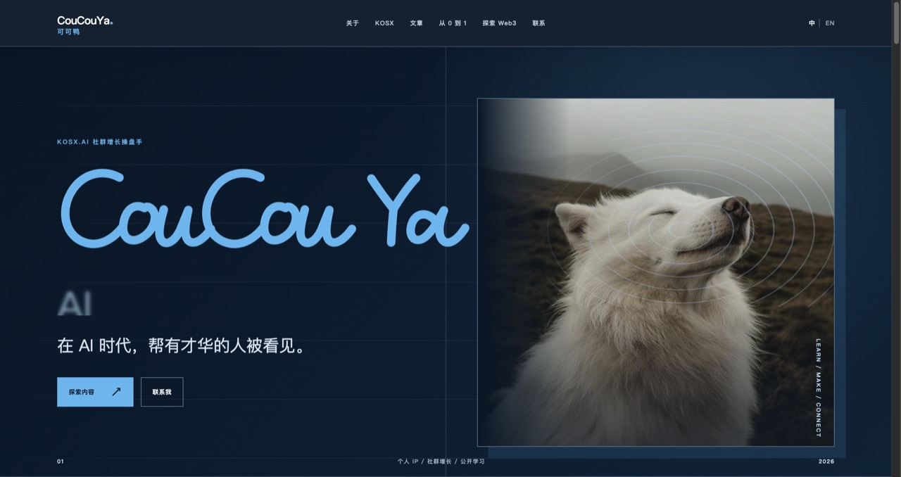
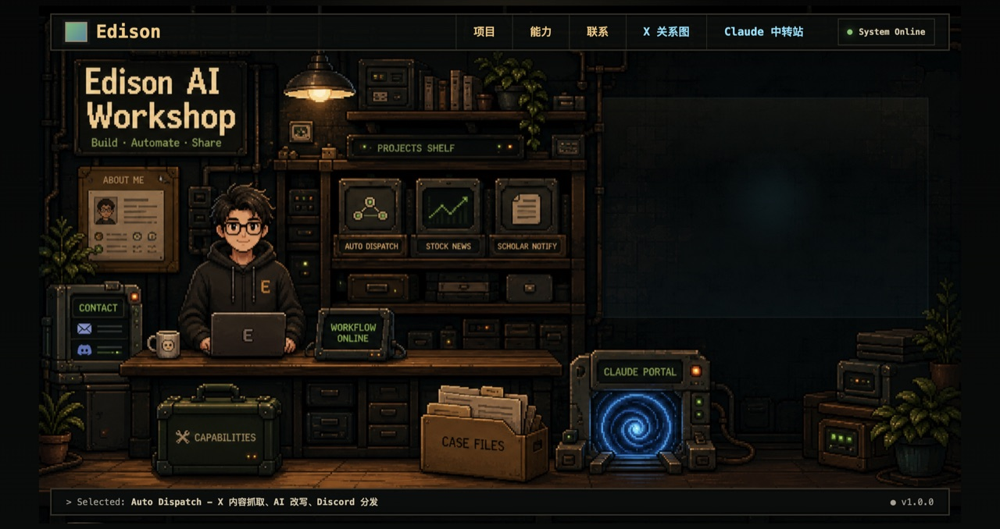
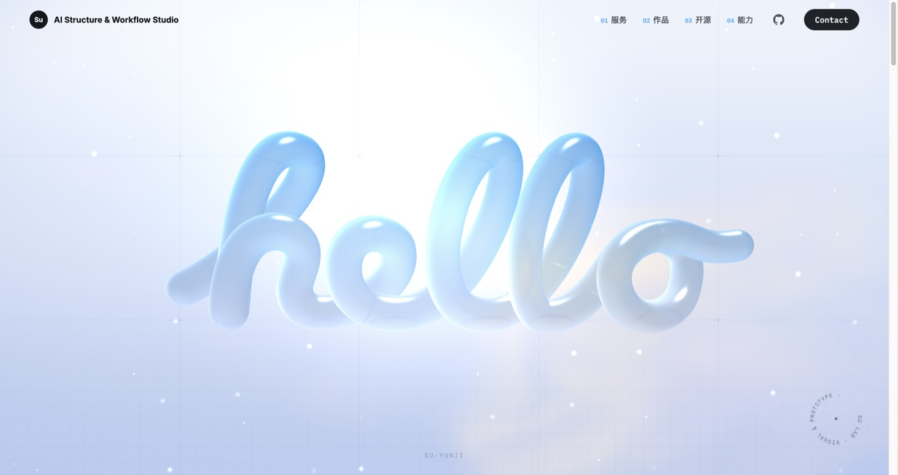
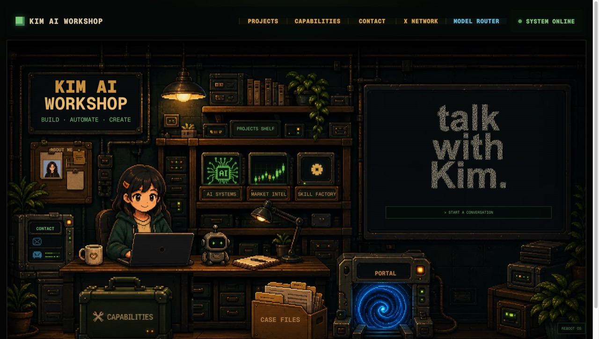
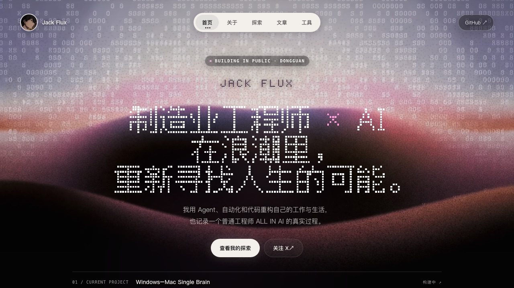
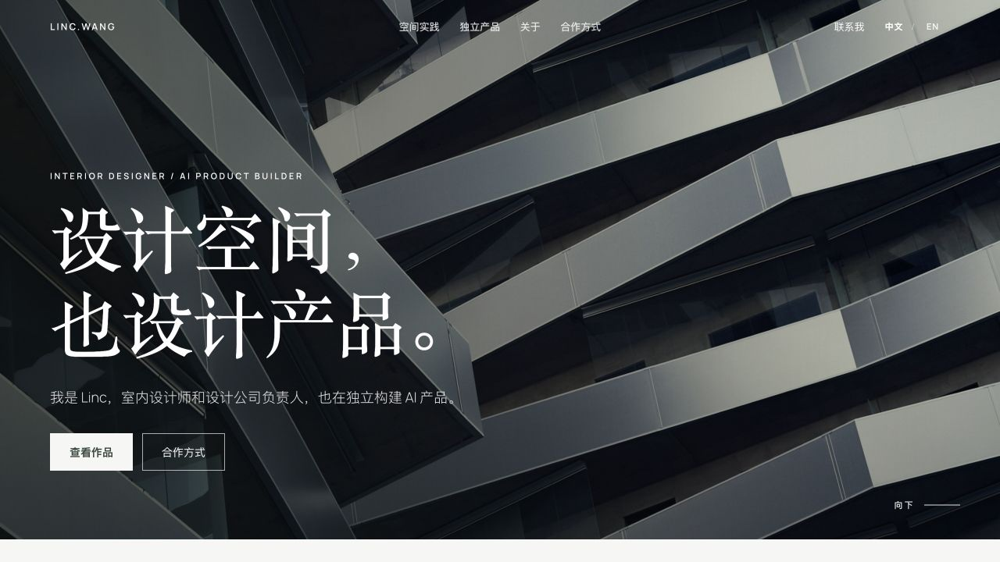
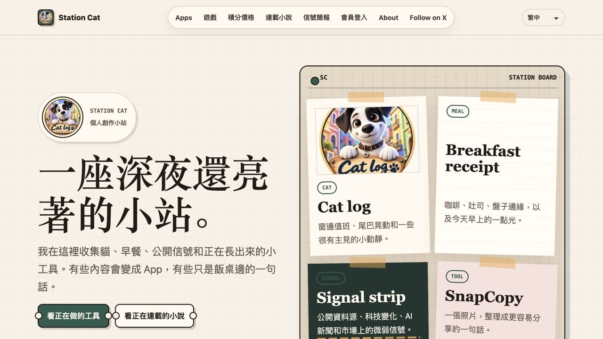

极简名片
名字 + 一句人设 + 一个「先聊聊」按钮，信息极轻，专为让人快速联系你。
适合创业者、自由职业者、服务型个人品牌——只需要客户知道「我在做什么、怎么找我」。
- 业务关键词直接放进网站标题，客户 1 秒看懂你在做什么
- 「先聊聊」式按钮专为私聊成交设计，不用先运营内容
- 信息量最小，搭建最快，改起来也最省事
mc9world.com
站长 Mike Lam · X @MikeLammm
客户想合作、HR 想面试你、粉丝想认识你——大家的第一步都是搜你的名字。搜出来的是一堆平台的碎片主页，还是一个把「你是谁、做过什么、怎么找你」一次讲清的完整主页，第一印象完全不同。一个自己的网站，等于把搜索结果的第一页捏回自己手里。
微博、知乎、X、小红书——你的内容、粉丝、人设，全都存在别人的服务器上。算法一改，你的内容可能就没人看了；平台出一个政策，你的账号可能就没了。而挂在你自己的域名下的网站不一样：只要域名在续费，它就一直在，谁也删不掉，谁也限不了流。
AI 几秒钟就能写一篇文章、画一张图、搭一个网站。当所有人都能廉价地产出内容，内容本身就不稀奇了——稀缺的是一个「真实、可信、长期在做这件事的人」。一个稳定存在的个人网站，就是证明这一点最硬的方式：别人说「我有十万粉丝」，你说「这是我自己的一亩三分地」，这两句话的分量不一样。
简历是静态清单，一页纸装不下一个人；名片递出去，联系就断了。个人网站随时能更新、随时能被搜到：求职、接单、社交，最终都指向同一个属于你的地址。它是所有场合的母版——你在一个地方把「自己」讲清楚，到处都能引用。
不买服务器、不碰运维：网站免费托管、全球加速、自动 HTTPS，可以绑定你自己的域名。内容由 AI 按你的资料生成，你不用写一行代码。从「我想要个网站」到「网站能打开」，资料齐了大约三天。
下面 9 个都是真实上线、点开就能玩的个人网站。每个都标了适合谁、好在哪、站长是谁——照着挑就行。

名字 + 一句人设 + 一个「先聊聊」按钮，信息极轻，专为让人快速联系你。
适合创业者、自由职业者、服务型个人品牌——只需要客户知道「我在做什么、怎么找我」。

项目 / 博客 / 技能 / 精华帖子分层陈列，把「你做过什么、正在做什么」一次讲清。
适合独立开发者、内容创作者——有作品有内容，需要一个撑得起的主页。

把你在各平台的干货沉淀成「实战手册」列表，内容即产品，顺便导流社群。
适合教程 / 科普作者、社群主理人——想用内容留住人、再把人引到私域。

用真实产品案例 + 工作流能力标签证明专业度，每个产品都讲清「解决什么问题」。
适合AI 产品开发者、自动化工具作者——用作品当简历，让客户秒懂你会什么。

3D 开场抓眼球，服务 + 作品 + 开源 + 能力四块陈列，中英双语，品牌感拉满。
适合设计师、独立工作室、AI 工作流顾问——需要「一眼高级」来抬身价。

开机动画 + 点得动的像素世界，项目、能力、案例、人脉图谱全藏在场景里，玩着玩着就记住了你。
适合AI Builder、自动化工具作者、想让人眼前一亮的极客——要的是记忆点，不是一页简历。

数字雨 + 点阵大字开场，项目、文章、AI 工作台按编号陈列，公开记录一个工程师 ALL IN AI 的全过程。
适合正在转型、正在深耕的工程师和开发者——把成长过程摊开来做信任资产。

以室内设计为职业根基，把 AI 产品、可合作服务与个人方法放进同一个清晰叙事。
适合有明确专业主业、同时在构建数字产品或服务的独立设计师、工作室负责人和跨界创作者。

把独立 App、网页游戏、连载小说和日常观察放进一座纸张便签式的小站，记录从零学习到持续做出作品的过程。
适合同时做产品、写作和日常内容的独立开发者与创作者——希望用一个有个人温度的网站集中展示多种作品。
在上面 9 个模板里选一个最像你的。拿不准就直说「我想要 A 的排版 + B 的感觉」，混合也可以。
三样东西：一句话介绍你自己、3~5 个项目或作品、想放上去的联系方式。发我就行，格式不限，零散也行。
资料齐了大约三天交付：内容按你的资料填好，网站部署上线，改到满意。想绑自己的独立域名也可以，域名费用自付，配置我来。
报价按风格、内容量和是否要独立域名浮动——先聊需求、看试做效果，再谈价格，不合适随时停。
能。你只需要提供资料，建站、部署、域名配置全部由我完成。上线之后想改内容，把新的发我就行。
不需要。网站免费托管在 Cloudflare Pages：全球加速、自动 HTTPS，不花一分钱托管费。想绑定自己的域名（比如 yourname.com）也可以，域名费用自付，配置我来。
资料齐了大约三天交付，改到满意为止。加急可以聊。
按你选的风格、内容量和是否绑定独立域名浮动，先聊需求再报价，先看试做效果再谈价格。
挑一个喜欢的风格，带上你的资料来找我：一句话介绍 + 3~5 个作品 + 联系方式。
到 GitHub 找我